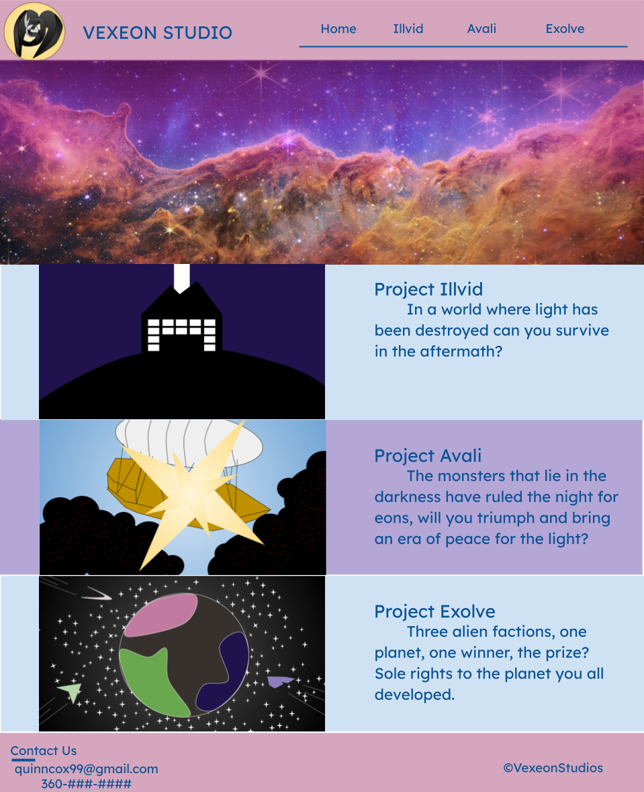

Site Plan
Quinn Cox
WDD 131
Purpose
I wanted to make a bunch of game pitches to show to others and work on myself. I love video games and I like making them. I especially love making ideas for games and I just want to show that off.
Branding
Website Logo

Style Guide
Color Palette
Primary
#D5A6BD
Secondary
#436A9F
Accent 1
#CFE2F3
Accent 2
#B4A7D6
Main Page

Illvid
Project Illvid
In a world where light has been destroyed can you survive in the aftermath?
Project Avali
The monsters that lie in the darkness have ruled the night for eons, will you triumph and bring an era of peace for the light?
Project Exolve
Three alien factions, one planet, one winner, the prize? Sole rights to the planet you all developed.
You will be a dolls that require a magic device in the mansion to live. You will have to go around the mansion looking for the many different obstructions you have to disable to get to the magic device. However a Guardian, a doglike monster will be hunting you. You will have to solve many physics based puzzles as you try to reach your goal.
In a world that was dominated by the bearers of the sun, you were a creature that lived in the shadows. One day the moon was destroyed and the sun became toxic. Many were killed during this event, but some beings survived in the wasteland, take the pieces of the moon that has been stored and last another day.

Avali
You will be a harpy fighting an ancient civilization in its bid for the world. Traveling by airship you can reach their den. By night you will have to fend off their army, by day you will get stronger by using their corpse for gear. They will muster stronger and stronger enemies the closer you get. The airship, always in motion, will be your only companion until you save the world.
Before the world ended it was a safe place for the sun bearers. They mostly fought among each other. One exception to that is when an ancient civilization of the moon ruled the night a few ages ago. When the most powerful of sun bearers found out how to store pieces of the sun the world became solely their domain, for a while at least.

Exolve
You are a pioneer from one of three factions trying to colonise a planet. Your faction has been given missions to complete. Timed individual goals like getting resources or sabotaging other factions. Group goals like terraform the planet or defend an objective. Build up your factions base and terraform the world around you. Remember, only the one faction gets the world, win it for your side.
When a species reach the stars they find they are not alone, other empires already exist and are already at odds. Colonization was difficult on its own, add in warfare and mass destruction and it was impossible. So a compromise was decided, three species would work together and terraform barren worlds, and whoever contributed the most would get to keep it.

JavaScript
I will automate the creation of the sites where I can input a name, a concept image, a short synapsis, and turn it into a sub page and show it in the main page.
I will also randomize the banner and the order of the game ideas